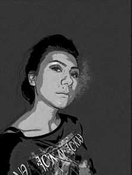

Name
Oana Cosmina Harcau
About
Hello, my name is Oana Cosmina Harcau and I’m an
engeneer after I gratueted
Polytechnic University of Bucharest .
Education
Highschool: National College "Matei Basarab"
University: Polytechnic University of Bucharest
Courses, certificates and awards
At ATC (Autodesk Authorized Training Center (ATC):
- Autocad level I-2D
- Autocad level II-3D
- Intensive course 3D Studio Max + Vray
Foreign languages
English (Advanced)
Professional experience
Engineer, Autocad Drafting, SC VEGRA SRL, Bucharest
Responsibilities:
- Achievement 2D and 3D building plans
- Floor plan drawings from paper sketches or scanned paper and
drawings to 2D
- Layer structure - using a structure in accordance with your
specifications
- Object representation - walls, doors, windows and other objects
- Geometric correspondence between floor plans, sections and facades
with different companies in the Netherlands and France
- Achievment template sites
- Flyers, photo modifications, banners
- Graphic magazine pages, cover book graphics
- Book achievement pages, layout page, pictures modifications in
the book pages, book design, cover book design
- Promotion of the “Archibus” product by email campaign
Layout for :
http://3dcadvegra.com
http://www.archibus.ro

Bucharest, Romania
Email
oana_harcau@yahoo.com
Specialties
autocad, photoshop,
3d studio max
Skills
Advanced level:
- Adobe Photoshop
- Autocad
Medium Level:
- Revit Architecture 2010
- 3D Studio Max
- Illustrator
- Indesign
Satisfied Level:
- Html, Css
- Microsoft Word, Microsoft
- Excel,Microsoft Outlook
Contact